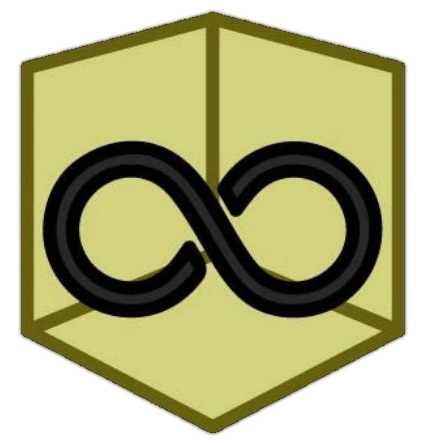
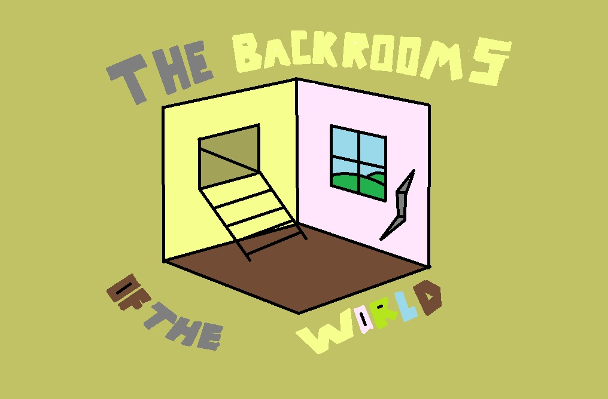

∞ The Backrooms of the world ∞


Р
Е
К
Л
A
М
А
Уровень ! 2.2
Уровень The End
Уровень Fun
Fun war
Информация
1
Cluster I
1.1
Главная девятка
1.2
Уровни 9-99
1.3
Уровни 100 - 199
1.4
Уровни 200 - 299
1.5
Уровни 300 - 399
1.6
Уровни 400 - 499
1.7
Уровни 500 - 599
1.8
Уровни 600 - 699
1.9
Уровни 700 - 799
1.10
Уровни 800 - 899
1.11
Уровни 900 - 999
Главная девятка
Уровень 0 "Лобби"
Уровень 1 "Обитаемая зона"
Уровень 2 "Водопроводные мечты"
Уровень 3 "Электрическая станция"
Уровень 4 "Заброшенный офис"
Уровень 5 "Отель ужасов"
Уровень 6 "Отбой"
Уровень 7 "Таласофобия"
Уровень 8 "Система пещер"
Уровни 9-99
Уровень 9
- "Затемненные пригороды"
Уровень 10
- "Поле пшеницы"
Уровень 11
- "Бесконечный город"
Level 12
Уровень 13
- "
☂️ Витрум Безумие 🏡
"
Уровень 14
- "Военный госпиталь"
Уровень 15
- "Футуристические залы"
Уровень 16
- "Дж. Психиатрическая лечебница Барри"
Уровень 17
- "Заброшенный перевозчик"
Уровень 18
- "Воспоминания"
Уровень 19
- "Темный отель"
Уровень 20
- "Склад"
Уровень 21
- "Машины желаний"
Уровень 22
- "Оскверненные руины"
Уровень 23
- "Аппаратная Инсания"
Уровень 24
- "Луна"
Ситуация 25
- "Аномалия"
Уровень 26
-
"Лес психоза"
Уровень 27
-
"Деревянные стены измученных душ"
Уровень 28
- "Лаборатория"
Уровень 29
- "Восход и закат солнца"
Уровень 30
- "Волны не умирают"
Уровень 31
- "Перенасыщение"
Level 32
- {НЕТ ДАННЫХ}
Уровень 33
- "Бесконечная библиотека"
Уровень 34
- "Плавание в сточных водах"
Уровень 35
-
"Нулевой день"
Уровень 36
- "Аэропорт"
Уровень 37
- "Возвышенность" / "Бильярдные"
Уровень 38
- "Маден"
Уровень 39
- "Мегалофобия"
Уровень 40
- "Магазин видеопроката"
Уровень 41
- "Последняя надежда"
Level 42
- {НЕТ ДАННЫХ}
Уровень 43
-
"Водный мир"
Level 44
- {НЕТ ДАННЫХ}
Уровень 45
- "Потусторонний лес"
Уровень 46
- "Аравийская пустыня"
Уровень 47
- "Вопросительная информационная опасность"
Уровень 48
- "Поезд в никуда"
Уровень 49
- "Минимальная сеть"
Уровень 50
- "Знакомое прошлое"
Уровень 51
- "Пещеры Олимпа"
Уровень 52
- "Маршалл Дэвид Хай"
Уровень 53
- "Лабиринты кинотеатра"
Уровень 54
- "Лестница спиралей"
Уровень 55
- "Черно-белый"
Уровень 56
- "Клетка Бога"
Уровень 57
- “Дверной проем дома”
Уровень 58
- "Дом Гаспара"
Уровень 59
- "Клубок"
Уровень 60
- "Невинная яма для игры в мяч"
Уровень 61
- "Поезд"
Уровень 62
- "Пространственные синие аномалии"
Уровень 63
-
"Острова бесконечности"
Уровень 64
- "Подпольная коррупция"
Уровень 65
- "𝕔𝕙
i
ldɥ
oo
d 🄿;
ay
gr0un
dʂ
..
.
?"
Уровень 66
- "Болотистые воды"
Уровень 67
- "Водные пути"
Level 68
- (НЕТ ДАННЫХ)
Уровень 69
- "Мотель Гильберта"
Уровень 70
- "Симуляция"
Уровень 71
- "
Водные горки
"
Уровень 72
- "Мечта"
Уровень 73
- "Площадь приветствия"
Level 74
- {НЕТ ДАННЫХ}
Уровень 75
-
"
Затемненная дорога
"
Уровень 76
- "Русская школа-интернат"
Level 77
- {НЕТ ДАННЫХ}
Уровень 78
- "Переход"
Уровень 79
- "Хаос в лифте"
Уровень 80
- "Вечное метро"
Уровень 81
- "Остров Милой"
Уровень 82
- "Разрушающая жара"
Уровень 83
- "Поле роз"
Уровень 84
- "
"
Однородный горизонт
"
"
Level 85
- {NO DATA}
Уровень 86
- "Глубокий черный"
Уровень 87
- "Тропический рай"
Уровень 88
- "Обед Водолея Атлантиды"
Уровень 89
- "Мечты о детском саду"
Уровень 90
- "Коридоры"
Уровень 91
- "Авторефрактор Реальность"
Уровень 92
- "Лесной сад"
Уровень 93
- "Палубные коридоры"
Уровень 94
- "Случайные остатки”
Уровень 95
- "Малые небеса"
Уровень 96
- "В одну сторону"
Уровень 97
- "Мрачные бесплодные"
Уровень 98
- "Бесконечный
R
a
i
n
b
o
w
"
Уровень 99
-
"Анемойя"